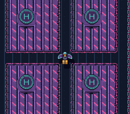

|
OpenSNES
Modern Open-Source SNES Development SDK
|
|
OpenSNES
Modern Open-Source SNES Development SDK
|

How to use the SNES Mode 7 – a special background mode that applies an affine transformation (rotation + scaling) to a single 128x128 tile layer. This is the same technique behind F-Zero's ground, Mario Kart's tracks, and Pilotwings' maps.
A glider flies over the plane, and the zoom is its altitude: zoom out and the view widens as if it climbed, while its shadow slides further away; zoom in and the shadow closes in. Scale and shadow are the two cues that make a flat Mode 7 plane read as height.
Read backgrounds/mode1 first (basic background setup). Mode 7 is fundamentally different from tile-based modes but the initialization flow is similar.
| Button | Action |
|---|---|
| A | Rotate clockwise |
| B | Rotate counter-clockwise |
| D-PAD Up | Zoom out (see more of the plane) — the glider climbs, its shadow drifts away |
| D-PAD Down | Zoom in (magnify) — the glider descends, its shadow closes in |
Then open rotate_scale.sfc in luna (luna-gui rotate_scale.sfc) or any emulator.
Mode 7 uses a special interleaved VRAM format:
This is completely different from Modes 0-3 where tilemap and tile data are in separate VRAM regions. main.c calls dmaCopyVramMode7(), which writes the tilemap and the tile data into the interleaved format the PPU expects (two DMAs with different VMAIN settings), then dmaCopyCGram() for the palette.
mode7Init() sets the rotation center to the screen center (128, 128). Scale 0x0100 is 1:1 (one texel per pixel).
mode7SetAngle() recalculates the 2x2 transformation matrix (registers M7A-M7D at $211B-$211E) using the current angle and scale. The angle is 0-255, mapping to 0-360 degrees.
After changing the scale, you must call mode7SetAngle() again because the matrix depends on both angle and scale. The scale range is clamped to 0x0008-0x0780 – values outside this range produce extreme distortion.
M7X/M7Y name the point of the plane the matrix turns around; the scroll (M7HOFS/M7VOFS) says where that point lands on screen. mode7Init() sets the centre to (128, 128) and leaves it above the screen, so the example scrolls by (0, 16) to put it on screen line 112, the middle:
The glider is Kit's, a 32x32 sprite drawn there; the plane turns under it. Its shadow is the same picture in an all-dark palette, drawn zscale >> 5 pixels below: 8 at 1:1, up to 60 at the widest view. The glider is OAM entry 0 and the shadow entry 1: between two sprites the lower index is drawn in front, whatever their priority bits, which only rank a sprite against the backgrounds (SNESdev wiki, Sprites).
Mode 7 applies a 2x2 matrix to BG1. The matrix encodes rotation, scaling, and skew. The hardware computes the transform per-scanline using four registers:
| Register | Address | Purpose |
|---|---|---|
| M7A | $211B | Matrix element A (cosine * scale) |
| M7B | $211C | Matrix element B (sine * scale) |
| M7C | $211D | Matrix element C (-sine * scale) |
| M7D | $211E | Matrix element D (cosine * scale) |
Mode 7 supports exactly one background (BG1). No BG2/BG3/BG4. Sprites still work normally on top, which is how F-Zero renders its cars.
Each Mode 7 tile uses 256 colors (8bpp), unlike Modes 0-3 which use 2/4/8 colors per palette. This gives richer visuals but limits you to 256 unique tiles total.
0x0100 = 1:1, 0x0200 = shrunk twice (shows more area), 0x0080 = magnified twice. The integer part is the high byte, the fractional part is the low byte.
| File | Purpose |
|---|---|
| main.c | Input handling, rotation/zoom logic, the glider and its shadow |
| res/mode7bg.png.toml | the import settings of the Mode 7 picture (opensnes-tileset, mode = 7); the build converts and links it, res/mode7bg.inc declares the symbols |
| res/mode7bg.png | the city from above, 1024x1024 in 235 tiles, written by devtools/art_assets/mode7.py (CC0, assets/neo-lumen/) |
| res/glider.png, res/glider.png.toml | Kit's glider from above, 32x32 (opensnes-sprite) |
| Makefile | LIB_MODULES := console dma background sprite input mode7 |
console, dma, background, sprite, input, mode7 (LIB_MODULES in the Makefile).